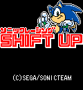
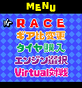
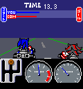
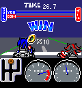
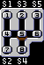
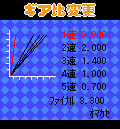
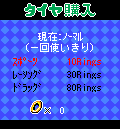
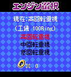
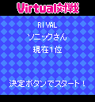

|  |
■ゲーム内容
リングを稼ぎ、自分の車を最速マシンへチューンしていくレースゲームです。 全国のライバルとレースできる「ヴァーチャル対戦」も楽しめます。
タイトル画面の時、以下のボタンで設定を変更できます。
＊：サウンドON/OFF
＃：バックライトON/OFF
|
|
|  |
■メニューセレクト
５つのメニューがあります。
・ CPUとレースする「RACEモード」
・ 全国のライバルデータをダウンロードして擬似対戦できる「ヴァーチャル対戦モード」
・ 獲得リングで車を改造してくれる各「SHOP」
|
|
|  |
■RACE/ヴァーチャル対戦
レースは１対１の短距離直線レースで行われます。
操作は以下のとおりです。
＊or＃：アクセル
各数字キー：各シフトキー
レースに勝つとリングを獲得できます。 |
 |
|
|

|
■シフトチェンジの操作方法
左図のように、シフトは携帯電話の数字キーに対応しています。
● 1速に入れてみよう！
スタート時は数字キーの「５」の位置にシフトノブがあります。
１速に入れたい時はアクセルボタンを離した状態で、「４」→「１」と数字ｷｰを押します。
※シフトチェンジをする時はアクセルボタンを離してください
|
|
|  |
■ギア比の変更
ギア比を変更してタイムアップを目指そう！
上下で変更したいギアを選択します。
左右で数値を変更できます。
<< １速〜５速 >>
各シフトのギア比を変更
<< ファイナル >>
ファイナルのギア比を変更 |
|
|  |
■タイヤの選択
レースで獲得したリングを使い、スタートダッシュに大切なタイヤを買う事ができます。
※タイヤは一回使いきりです
|
|
|  |
■エンジンの選択
より高性能なエンジンをGET！
レースで獲得したリングを使い、エンジンを交換できます。
※「ギア比変更」「タイヤ購入」「エンジン選択」の各ショップのＢＧＭはおなじみのあの曲(!?)を用意しました |
|
|  |
■ヴァーチャル対戦
全国のライバルデータをダウンロードしてヒートバトル！
なんと、全国の実在するライバルデータをダウンロード可能！ ライバルデータとのレースが楽しめます。 「通信」をするごとに色々なライバルデータをダウンロード可能なので、
是非、全国のライバルとの対戦を楽しんでください！
※ライバルデータはアプリを終了すると消えてしまいます。
再び遊ぶには新しくダウンロードし直してください。
※ライバルデータのダウンロードにはパケット通信料がかかります。
|
|